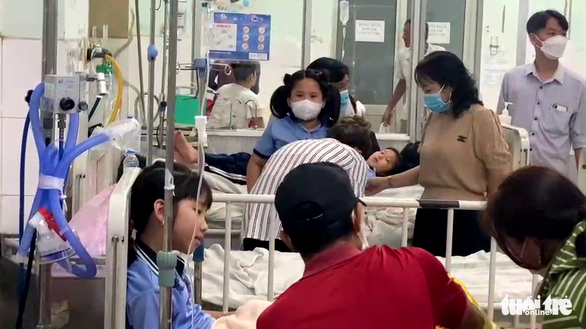
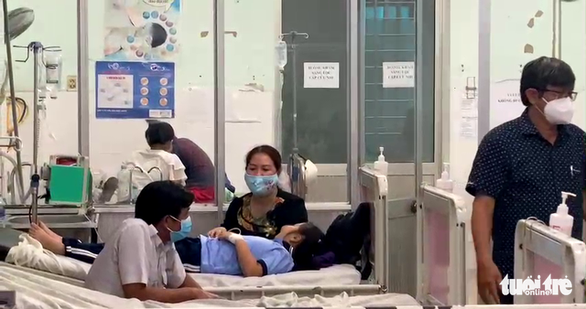

Báo tuổi trẻ thủ đô
Nhiều học sinh lớp 3 nhập viện sau khi uống sữa ở trường
TTO - Sau khi uống sữa buổi chiều, 14 học sinh của Trường tiểu học Nguyễn Trãi ở thành phố Mỹ Tho bị đau bụng, nôn ói nên được nhà trường đưa vào bệnh viện cấp cứu.

Các bé nghi bị ngộ độc do uống sữa được cấp cứu tại Bệnh viện Đa khoa trung tâm tỉnh Tiền Giang - Ảnh: HOÀI THƯƠNG
Tối 25-11, Bệnh viện Đa khoa trung tâm tỉnh Tiền Giang cho biết từ chiều đến tối cùng ngày, đơn vị này đã tiếp nhận 14 em học sinh nhập viện nghi bị ngộ độc sau khi uống sữa.
Triệu chứng chung của các học sinh khi nhập viện là nôn ói, đau bụng. Các bác sĩ đã truyền dịch cho các em, hiện sức khỏe các em cơ bản đã ổn định.
Theo thông tin ban đầu, các học sinh trên học tại Trường tiểu học Nguyễn Trãi ở phường 7, TP Mỹ Tho, Tiền Giang.
Thầy Phan Minh Tân - hiệu trưởng Trường tiểu học Nguyễn Trãi - cho biết khoảng 14h cùng ngày, nhà trường có cho các em học sinh uống sữa. Loại sữa này do một doanh nghiệp ở TP.HCM cung ứng cho bếp ăn.
Sau khi uống sữa, 14 học sinh có các triệu chứng nôn ói, đau bụng nên được nhà trường đưa đi viện cấp cứu.
Trao đổi với Tuổi Trẻ Online, ông Lê Quang Trí - giám đốc Sở Giáo dục và Đào tạo tỉnh Tiền Giang - cho biết đến khoảng 19h cùng ngày, các em đã phục hồi sức khỏe, ổn định và đã xuất viện về nhà.
Các cơ quan chuyên môn của Sở Y tế tỉnh Tiền Giang tiến hành lấy mẫu sữa, thức ăn kiểm nghiệm để tìm ra nguyên nhân của vụ việc này.

Các bé nghi bị ngộ độc do uống sữa được cấp cứu tại Bệnh viện Đa khoa trung tâm tỉnh Tiền Giang - Ảnh: HOÀI THƯƠNG

Xác minh video xe hơi tông ngã xe CSGT ở quận 5 rồi tháo chạy
TTO - Theo hình ảnh từ video, hai chiến sĩ CSGT dừng xe đặc chủng trước đầu xe hơi màu vàng. Sau đó, người lái xe hơi tông ngã xe đặc chủng của CSGT rồi bỏ chạy hướng về quận 1, xe của CSGT ngã đè lên một xe máy khác của người dân trên đường.
6 phút trước